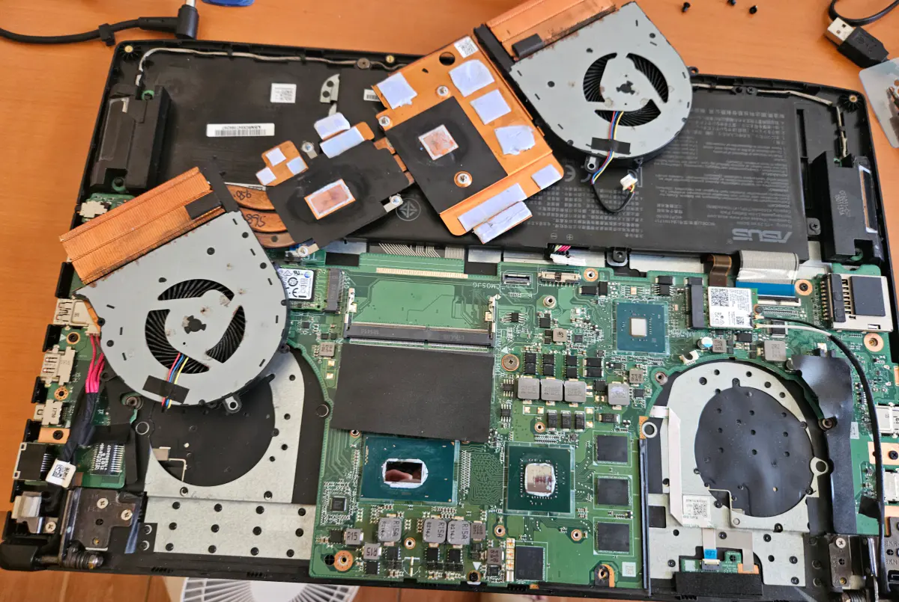

筆電過熱與噪音問題
深度清理散熱系統，更換老化散熱膏，有效降低 CPU 溫度
技術問題不再，體驗決定一切
專業硬體診斷與維修，確保設備穩定運行
完整安裝與設定，流暢的使用體驗
結合溝通與技術，快速解決問題
SSD 與 RAM 升級，改善設備緩慢問題，啟動時間縮短 30 秒
深度清理散熱系統，更換老化散熱膏，有效降低 CPU 溫度
驅動、軟體、設定，一次到位，開機即用
以 Python 與 HTML 開發，強化加密機制，並調整系統介面，提升安全與易用性